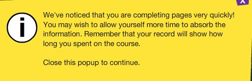

I proposed and ran a usability evaluation of the platform every police officer used for their training, and turned the findings into a funded improvement roadmap.
My role
Instructional Designer.
The platform
The Managed Learning Environment, where every police officer in the country took and evidenced their training.
Method
A heuristic evaluation against Nielsen's ten usability heuristics, chosen because there was no research budget.
Result
The prioritised findings became tickets, and the tickets became a resourced roadmap.
The challenge
The Managed Learning Environment was the national learning platform for UK policing. New recruits took mandatory courses on it. Public order officers took updated legislation through it. Officers in specialist roles, including work that needed SC clearance, used it to show they understood current guidance. It tracked completion, time spent and assessment scores, and those records mattered professionally and operationally.
Forces were unhappy, and the complaints reached us as complaints about the interface. I didn't think the interface was the whole story, and I had no budget to find out properly.
The organisation had moved training from in-person days, where officers sat in a room with colleagues away from their normal duties, to individual e-learning at a desk. Some of the unhappiness really was about the interface. Some was frustration about a decision nobody had consulted them on. It would have been easy to dismiss the second kind as noise. People telling you they want time away from a computer, and that they aren't confident with technology, are giving you a real finding about your service, even when they're complaining about something else. I needed to separate the two, and I needed evidence and not the loudest voice in the room.
Choosing a proportionate method
I had already run user testing in the organisation, so a research programme wasn't unthinkable. It was slow, though, and no money was allocated. The realistic options were to act on the loudest complaints, to propose research we couldn't fund, or to find something in between.
A heuristic evaluation
The problem
Complaints about the platform needed sorting into interface problems and everything else, with no budget for research.
Chose
An evaluation against Nielsen's ten usability heuristics. With an HCI background I could run it myself, in days and at no cost.
Result
Findings framed against an external standard and not against my opinion, so the conversation with stakeholders stopped being about taste.
The output, rebuilt
The deliverable was a prioritised list. Each finding was tied to the heuristic it broke, with a severity and a recommended action. I've rebuilt it here to show the shape of the document and not the live system.
Heuristic
Finding
Severity
Visibility of system status
Learners couldn't tell whether a completed module had been recorded against their profile, which was the thing they most needed to be sure of.
High
Match between system and the real world
Navigation used platform and administrative vocabulary, not the words officers used for their own training and records.
High
User control and freedom
There was no reliable way to leave a module and resume at the same point, on a service used in short windows between operational duties.
High
Consistency and standards
Modules built at different times by different teams behaved differently, so what people learned in one course didn't carry over to the next.
Medium
Error prevention
Assessment submission had no confirmation step, on a test whose score was recorded against the individual.
Medium
Recognition rather than recall
Finding a specific mandatory course meant knowing its title in advance. You couldn't browse by role or requirement.
Medium
Help and documentation
Guidance was written for administrators, not for the officer trying to complete a course and get back to work.
Low
A reconstruction. It shows the structure and priorities of the evaluation. The live platform and its records are not shown.
From findings to funded work
A list of usability problems isn't an outcome. I took the prioritised findings to stakeholders and argued them against the heuristics, not against preference, and had them turned into tickets. The tickets became a resourced roadmap of improvements to the platform.
The constraint I was given, no budget and no time and a complaint I suspected was about something else, decided the method more than the rigour did. Choosing something small and defensible got the work funded. Proposing something expensive and correct would have got it declined.
A related decision
Mandatory training has a particular failure. People click through to clear the requirement and carry a record of having completed something they didn't absorb. So we watched for a pace that suggested nobody was reading, and said so, plainly, without blocking anyone or pretending we couldn't see it.
The pacing message

It's honest about the monitoring already built into the system and doesn't hide it. It leaves the decision with the person, and it treats a compliance exercise as something a human being is actually doing. That combination is most of what I think good public service design is.